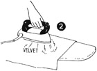
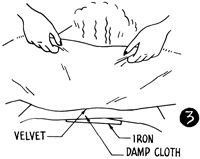
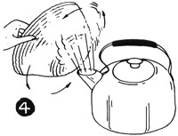
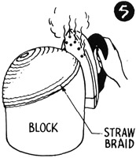
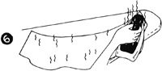

1952—How to Make Hats
by Ruby Carnahan
Steaming and Pressing
Use a pressing cloth over seams, dampen seam with a sponge, press lightly, lifting cloth up quickly to allow steam to escape.
STEAMING VELVET OR OTHER PILE FABRIC WITH A STEAM IRON (ILLUS. 2)
Hold steaming iron just above material, on the wrong side, allowing only steam to touch material. Never let iron touch material.
STEAMING VELVET OR OTHER PILE FABRIC WITH A PLAIN IRON (ILLUS. 3)
Stand a hot iron on end and cover iron with a damp cloth. Pass wrong side of velvet over steaming cloth on iron. Do not hold velvet too tightly as finger marks will show.
STEAMING STRAW BRAID ON FRAME (ILLUS. 4)
Baste straw braid to frame and gently pass frame through steam for a few seconds. Keep turning frame while steaming. Be careful not to use too much steam when steaming on a frame. Too much steam will cause frame to collapse.
STEAMING STRAW BRAID ON A BLOCK (ILLUS. 5)
Pin straw braid on block, press braid gently with a steam iron. Let straw braid dry on block. Some braids must be pressed under a pressing cloth.
STEAMING AND PRESSING FELTS
Steam felt crowns over a teakettle when blocking. Use a steam iron, or a damp cloth and iron, to steam, stretch and flatten a felt brim. Place felt brim on pressing board and cover with a damp cloth, press with a hot iron lifting cloth and iron when felt becomes soft and pliable enough to stretch with your fingers. Continue in this manner until felt is stretched sufficiently. (Illus. 6)